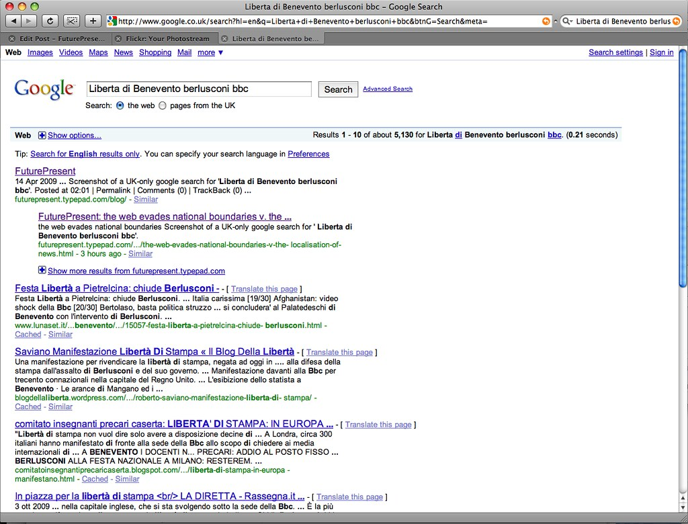

How Do You Optimize a Page to Win Google Featured Snippets?
Learn how to optimize for featured snippets with clear answers, the right shape for paragraph, list and table snippets, and a checklist that wins the top spot.
A featured snippet is an answer that Google shows at the top of a search result. The snippet pulls one clear answer from a page and it shows the page address below the answer. When you learn how to optimize for featured snippets you learn how to shape that answer so Google picks your page.
Many writers bury the answer deep in a long page. Google cannot find a clean answer to lift. The snippet then goes to a rival page.
After this guide you will shape answers that Google can lift. You will format each answer for its snippet type. Your pages will win the top spot.

Featured Snippets Answer the Search Right on the Page
Google shows a featured snippet when one page answers the search with a clear line. The snippet sits above the normal results and it draws the first click. When you learn how to optimize for featured snippets you learn to write that clear line first. Searchers read the answer and they click the page for the full detail.
A snippet win starts with a page that already ranks near the top. Google lifts answers from pages it already trusts for the search. A page on the second page of results rarely wins a snippet. Writers improve the rank first and they shape the answer next.
Sara runs a recipe site in Lahore and her biryani guide ranked on the first page. Her answer sat buried in the middle of the guide and Google skipped it. Sara moved a short answer to the top of the guide. Google lifted her answer into a snippet and her guide now draws the first click.
Paragraph, List and Table Snippets Each Need a Different Shape
A paragraph snippet holds a short answer in two or three sentences. Writers open with the answer and they add one line of support. A tight answer fits the box and Google lifts it with ease.
A list snippet holds steps or items in a clear order. Writers shape each step as one short line and they keep the order true to the task. A table snippet holds rows of facts that readers compare at a glance. Writers build the table with plain labels and short values.
Omar runs a travel site in Karachi and his packing guide listed items in a long paragraph. Google could not lift a clean list from the block of text. Omar rewrote the items as short lines in order. Google lifted his list into a snippet and his guide now draws visits from searchers who pack for a trip.
Answer Real Questions in Plain Words
Searchers type full questions into Google and they want a direct answer. Writers read those questions from search suggestions and from the questions box on the results page. Each question earns one page section with a clear answer at its start.
Plain words win snippets because Google lifts answers that any reader can grasp. Writers drop jargon and they write the answer as they would speak it to a friend. When you learn how to optimize for featured snippets you learn to put the answer before the detail. The detail follows the answer and it adds the proof that readers need.
Ayesha manages a job board in Islamabad and her guide answered how graduates find a first job. Her answer opened with a long story about the job market. Ayesha rewrote the opening to state the first step in one line. Google lifted her line into a snippet and her guide now draws visits from new graduates.
Featured Snippets and People Also Ask Work Together
The People Also Ask box holds related questions that searchers ask next. A page that answers those questions earns more chances to win a snippet. Writers add a short section for each related question on the page.
A snippet win often leads to a People Also Ask win on the same page. Google trusts a page that answers the main question and the next questions too. Owners track both boxes for their main searches and they shape new sections for the questions they miss.
Bilal owns a furniture store in Faisalabad and his chair guide answered one question only. The People Also Ask box showed four more questions his guide ignored. Bilal added a short section for each question with a clear answer at its start. Google lifted his answers into snippets and his guide now draws visits from buyers who compare chairs How to Answer People Also Ask Questions.
Run a Featured Snippet Checklist Before You Publish
A short checklist catches the slips that cost a snippet win. Writers check that the answer sits near the top of the page. They check that the answer uses plain words and that it names the search words.
The checklist also covers the shape of the answer for its snippet type. A list answer needs short lines in order and a table answer needs plain labels. Writers read the page once more and they fix any line that hides the answer.
Hira runs a coaching site in Multan and her course guide held a clear answer at its end. Her checklist showed the answer sat too low on the page. Hira moved the answer to the top of the guide. Google lifted her answer into a snippet and her course page now draws visits from learners who want her lessons.
Frequently Asked Questions
What is a featured snippet?
A featured snippet is a short answer that Google shows at the top of a search result. Owners who learn how to optimize for featured snippets shape one clear answer so Google picks their page. The snippet shows the page address below the answer and readers click it for the full detail.
What types of featured snippets exist?
Google shows paragraph snippets, list snippets and table snippets for different searches. A paragraph snippet holds a short answer in a few sentences and a list snippet holds steps or items in order. A table snippet holds rows of facts that readers compare at a glance.
Do featured snippets replace the first result?
A featured snippet sits above the normal results and it draws the first click for many searches. The page that wins the snippet still holds its normal result below the box. Owners aim to win both spots with one strong page.
How does a page win a featured snippet?
A page wins a snippet when it already ranks near the top and it holds a clear answer near its start. Google lifts the answer that matches the search in plain words. Writers improve the rank first and they shape the answer next.
What is the difference between a featured snippet and People Also Ask?
A featured snippet shows one answer at the top of the results page. The People Also Ask box shows a list of related questions that searchers can open one by one. A page that answers both earns more chances to appear in the boxes.
Should every page target a featured snippet?
Pages that answer a clear question make the best snippet targets because Google can lift one clean answer from them. Sales pages and home pages rarely fit the box because they hold no single answer. Writers pick question pages for snippet work and they leave the rest alone.
How long should a snippet answer be?
A paragraph answer stays near two or three sentences so it fits the box cleanly. Writers open with the answer and they add one line of support after it. A long answer spills out of the box and Google picks a shorter rival line instead.
Can a page lose a featured snippet?
A page loses a snippet when a rival page offers a clearer answer or when the page slips in rank. Owners refresh the answer and they check the rank after each change. A steady page with a clear answer holds its spot longer than a page that goes stale.
Shape one answer today and learn how to optimize for featured snippets by watching which answer Google lifts. Put the answer at the top, match its shape to the snippet type and answer the next questions too. A clear answer helps your page win the top spot in search results.
Shape one answer for a featured snippet today.
How to Answer People Also Ask Questions
Related articles
- What Is the Difference Between SEO and SEM, and Which One Should You Choose?
- What Are Dofollow and Nofollow Links in SEO and When Do You Use Each?
- How SaaS Companies Use User Reviews to Win Search Traffic and Signups